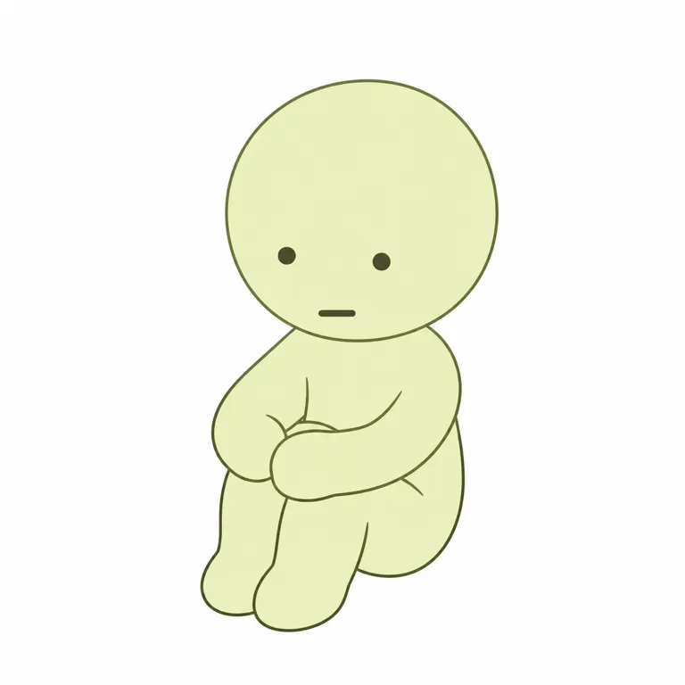

V01头部，是摄影亮部而非标准色
V01 [200, 200] @ [110, 39]STANDARD STUDY · 2026-10-29
角落君 SMISKI
给它找个角落，故事才开始。
把角落变成用户可布置的舞台，用姿态、藏放和明暗发现建立关系；不同发光技术分开，未把全球热度宣传当销量。
查看真实平面测试 ↗
01 / 对象、权属与起源
- owner
- creator
- 未知 / null
- operator
- Dreams Inc.／株式会社ドリームズ
- relation
- 官方产品与版权由Dreams署名；自然人初始作者、内部设计分工未核
- since
- 2015
- origin
- path
- 产品先行
- year
- 2015
- story
- 官方回顾从2015年开始；首代Series1以房间角落、不同姿态和蓄光小公仔存在。精确首售日有外部说法，未由本轮原始官方确认。
02 / 时间线
| 时间 | 事件 | 证据类型 | 来源ID |
|---|---|---|---|
| 2015 | Series1产品起点，官方制造年与周年回顾一致 | self_report |
|
| 2018-09-01 | 6个系列税前550→650日元，不能直接推断利润增长 | fact |
|
| 2025-09-19 | 十周年Birthday新系列日本发售 | self_report |
|
| 2025-11-27 | 卧姿触摸灯Vol.2电力发光 | self_report |
|
| 2026-10-29 | Reflector Charm计划日本发售；公开页不等于当日所有店可购 | self_report |
|
03 / 表达、用户与时代窗口
- expression
- line
- 我安静地在角落，陪你过普通的一天。
- sentence_type
- 陪伴
- basis
- inferred
- core
- personality
- 隐蔽、安静、各有个性
- emotion
- 面无表情
- action
- 抱膝、回头、躺卧、窥看，在不同角落存在
- basis
- official
- insight
- scene
- 房间/工位边角，关灯或低头时意外发现
- behavior
- 用户挑选匹配家具和动作的摆放位置，官网也引导为每一只找角落
- state
- 想要低打扰的小陪伴与有趣的环境细节
- conflict
- 躲起来的角色需要被发现；静止玩具靠用户摆放完成关系
- unsaid
- 你不用陪我说话，在那里就好。
- basis
- inferred
- circle
- who
- 小公仔陈列者、生活空间装饰者、主题/隐藏收藏者；人口统计未知
- where
- 桌边、书架、手机边框；国内外官方与授权店
- buy
- 有开箱/端盒话题自述，无订单核验；评论喜欢与嫌贵并存
- signs
- 姿态命名、圆无发头、小点眼短嘴、夜间发现；不是角落小伙伴
- share
- 将角色安插到家具和生活情境；本轮未采用户摆放图的完整视觉
- breakout
- 携带边角的HIPPERS提供场景扩展，增量销量不明
- pendulum
- position
- 荒诞抽象
- against
- 对高表情密度角色的另一种选择：少五官、姿态和位置讲故事；不是全社会转向i人的证据
- 组织
- Dreams同时运营其他品牌，但不把其集团收入移给SMISKI。自然人设计者、开发专属资源及成本未知。
- 窗口
- 2015产品先行，不是先有长篇动画；2025周年与2026功能周边说明持续供给，不证明连续增长。
04 / 实际看图：身份、变体与载体
以下逐图观察只限实际可见角度。图像URL日期不作作品创作日期，产品照片不作标准三视图。
圆秃头低垂、两点眼与短横嘴，双臂环抱膝前，双脚落在前方，淡黄绿实体处于深绿圆背景。
仅观察官网商品图可见视角；小尺寸图不足以判断模线/量产精度。
[s1]
圆头回转、眼嘴朝侧前，身体微弯且一臂向前，小腹突出；不是统一瘦体。
仅观察官网商品图可见视角；小尺寸图不足以判断模线/量产精度。
[s1]
横向卧姿，一手撑头另一手在腹侧，头脸倾斜；姿态改变而小五官保留。
仅观察官网商品图可见视角；小尺寸图不足以判断模线/量产精度。
[s1]
淡蓝身体坐姿，双手举至头边，白色泡沫帽状块在头顶；蓝色是本系列，不是换了物种。
仅观察官网商品图可见视角；小尺寸图不足以判断模线/量产精度。
[s8]
正面持绿色手机，下半身被前景挡住，双臂向前；不补遮挡后腿部。
仅观察官网商品图可见视角；小尺寸图不足以判断模线/量产精度。
[s6]
大型卧姿灯在桌面发光，靠书、杯和收音机提供尺度语境；脸部仍极简，表面光滑。
环境光不是标准色，灯光效果不等于普通公仔蓄光效果。
[s9]- 外形五轴与头脸
- archetype
- 类人
- silhouette
- 大头小身
- mark_position
- 姿态
- 五官
- mark
- 圆头无发无耳，小点眼短横嘴，光滑单色圆躯体配具体动作
- face
- V01头低垂、眼位偏低、两眼疏开、微短横嘴；无眉鼻耳
- emotion
- 面无表情
- odd
- 极小脸信息与不同姿态/角落关系形成反差；系列中有胖瘦差异
- density
- 极简
- naming
- 描述
- group
- 角色群
- 识别组合撞车边界
- 避免圆秃头、点眼短横嘴、半透明黄绿蓄光小身体、角落抱膝/窥视姿态整套机制与识别一起搬用。
- 跨图不变量与变量
- recurring
- 圆无发头、小深眼短嘴、圆化躯体与生活姿态。
- variables
- 胖瘦、动作、绿/蓝、道具、胶附着/照明/反光结构。
- unverified
- 材质统一标准、脸的全历史变更、全角度模型。
05 / 色彩与材料
- mode
- 单色识别
- main
- 常见淡黄绿；Bath蓝色为系列差异
- signature
- 低彩度单色身体＋小深色脸；绿不是所有系列不变量
- notes
- 原图拍摄明暗/发光状态和插画色块不可混用，背景绿圆不属于身体
V04脸侧，受照明影响
V04 [200, 200] @ [101, 89]色值为原始图像取样的屏幕近似；背景、主角与材料分开，不是官方色卡。
普通公仔官方称蓄光，HIPPERS明列ATBC-PVC与胶；触摸灯为电力照明，反光挂件靠外来光。发光时长、亮度、反光安全等级和每种塑料配方未本轮实测。06 / 代表产品与内容载体
| SKU/载体 | 发售/出版 | 价格·币种·地区 | 尺寸 | 材料/工艺 | 边界 | 来源ID |
|---|---|---|---|---|---|---|
| Series1 SMI66200 | 2015，精确首售日null | 当前日本JPY1210含税；原价不是1210 | 公仔约W29—70×H39—74mm，包装60×52×80mm | 官方称蓄光；配方null | 英文店高尺寸文本缺字，与日文店并列查证；约40g口径不推广全IP |
|
| Bath Series | 未知 / null | 日本访问价JPY1210含税（官方店相关商品栏） | 未知 / null | 蓝色蓄光公仔 | 6常规+隐藏，非绿色通用规则 |
|
| HIPPERS SMI66437 | 未知 / null | 日本JPY1430含税 | W29—52×H48—70×D22—36mm | ATBC-PVC、蓄光、附着胶带 | 胶可重复使用依赖表面与清洁条件，非永久粘贴保证 |
|
| Birthday系列 | 2025-09-19日本 | 未知 / null | 未知 / null | 蓄光公仔 | 6常规+1隐藏，按本款公告，不套给所有周边 |
|
| Touch Light Vol.2 SMI66482 | 2025-11-27日本 | JPY4180含税 | 未知 / null | 电力触摸灯，3档 | 142g；关灯不蓄光，续航官方条件与实测分开 |
|
| Reflector Charm SMI66503 | 2026-10-29日本正午计划 | JPY770含税 | 未知 / null | 反射光挂件，基材null | 11g、6款；不声称等同自行发光或已通过道路安全认证 |
|
- primary
- 实物潮玩
- secondary
- 授权图案
07 / 用户证据、商业数字与反证
- source
- u1
- account
- 潮玩大眼睛👀
- read_scope
- 视频页标题/标签/当前可见评论；未全看视频
- finding
- 可见喜欢、嫌贵等反应；标题的地区冷暖未取得销售支持。
- boundary
- 不把单条价格抱怨当价格弹性实验
- source
- u2
- account
- 原仓IP观察
- read_scope
- 正文，显示04-09；未逐页图
- finding
- 介绍借i人/偷感语言帮助理解，给出衍生载体清单。
- boundary
- 日期、国家数与受众比例待原始核验，非消费者原话
- source
- u3
- account
- 糯唧唧丶兔叽叽
- read_scope
- 正文与可见评论，07-27；未全看视频
- finding
- 把工具与夜间发光作为关注点，评论称淡淡的、可爱。
- boundary
- 合作/投放关系未核；没有订单及行为占比
| 指标 | 数值 | 单位 | 期间/主体 | 证据 | 来源ID |
|---|---|---|---|---|---|
| 2018调价前税前单价 | 550 | JPY | 2018-08以前指定6系列/日本 | fact |
|
| 2018调价后税前单价 | 650 | JPY | 2018-09起指定6系列/日本 | fact |
|
| 独立IP收入/净销量/复购 | 未知 / null | 未知 / null | 截至2026-10-29 | hypothesis |
|
- 反例与替代解释
- 中国爆冷的标题没有销量依据，不能作地区失败结论；其评论可见价格阻力，非总体态度。官方2018调价提示成本约束存在。蓝色Bath与电力灯也反驳“全IP绿色/全部蓄光”的过度归纳。未核大规模退坑、售罄或二手成交。
- 用户理论检查
- shell
- 圆头和点眼是公共语言，关系来自具体体块、姿态、色与藏放
- core
- 安静存在而非持续表演，不同成员又有行为性格
- shadow
- 别把“角落”一词与其他群像IP混同；取机制不取整套造型
- two_layers
- surface
- 低打扰的微小陪伴
- deep
- 姿态名称、适配位置与隐藏款；二者对应转化未验证
- validation
- 定价/限购/在库是供给信息；端盒标签与喜欢评论不足以证明付费、复购和增长
08 / 机制：证据支持到哪一步
角色的位置是产品内容的一部分，用户摆放才能补完它。
- claim
- 角色的位置是产品内容的一部分，用户摆放才能补完它。
- type
- inference
- evidence
- Series1为每个姿态指定发现地点；HIPPERS把边角移动到随身物件。
- boundary
- 产品用法与官方设定可核，未做用户留存/转化对照。
少表情把叙事重心让给动作和家具环境。
- claim
- 少表情把叙事重心让给动作和家具环境。
- type
- inference
- evidence
- 抱膝、躺卧、回头共享脸部语法，官方又区分不同性格。
- boundary
- 不能把所有成员说成同一个i人，用户可能单纯喜欢单色造型。
从蓄光到灯和反光，可延展“黑暗中发现”关系，但工艺必须分别验证。
- claim
- 从蓄光到灯和反光，可延展“黑暗中发现”关系，但工艺必须分别验证。
- type
- inference
- evidence
- 三类产品的光源机制由官方明确区分。
- boundary
- 不是材料可互换，更不是已证明的安全或治疗效果。
- 给lab/form/studio的有边界启发
- lab
- 将陪伴写成可发生的接触时刻，检验用户需要主动回应还是静默存在。
- form
- 用动作和摆放支撑面部留白；先建立独立头脸，不复制圆头绿体。
- studio
- 让产品结构参与故事，如附着边缘、位置发现；分别检验蓄光、照明、反射和胶的实际体验。
09 / 真实平面提示词测试
以下为可见作品的研究重建，不是原作者提示词，也不证明原作由AI制作。附图、纯文字和语言结论严格分开。
英文附图v1在V01抱膝成员的可见角度二维转译上接近。眼嘴比原图略显大，头部轮廓与手部曲线有差异、浅渐变仍在；不等于严格平涂、纯文字或其他款通过。中文/重复稳定性未测。
smi-flat-ref-v1 · ready（限定范围）

- language
- en
- input_mode
- reference_assisted
- target_scope
- Series1 Hugging Knees官网200×200商品图可见角度二维转译
- observations
- 圆秃头、小点眼短横嘴、抱膝与手脚关系、淡黄绿位置接近；眼嘴略大、头手曲线与浅色阶仍不同。仅依附当前图，不证明纯文字或整套角色群可复现。
Use the attached official product image as the only identity and pose reference. Translate only the single seated pale yellow-green humanoid creature into a flat two-dimensional character illustration on a pure white square background. Remove the dark green circular backdrop and all studio shading. Preserve the unusually large smooth round bald head, tiny widely spaced dark dot eyes, very small short horizontal mouth low between them, no visible nose or ears, very short neck, rounded narrow torso and bent knees drawn close against the chest. Match the visible hands clasped around the front of the knees, low small rounded feet together, slightly downward-facing head and compact seated silhouette exactly as shown. The figure is one simple unclothed non-anatomical toy body: no body hair, no genitals or human anatomical detail. Keep the head-to-body proportion from the reference and the placement of both arms and feet; do not stand it up or change its pose. Use a uniform light yellow-green local fill and thin muted olive outlines only where needed to separate overlapping limbs. Do not add a smile, hair, brows, clothing, new props, circle, texture, glow aura, gradients, shadows, lettering or watermark. This is a study translation of only the visible view, not a rear-view reconstruction.下载原文
全部测试记录（含未通过版本）
smi-flat-ref-v1 / ready
- prompt_id
- smi-flat-ref-v1
- subject_id
- smiski
- version
- 1
- target_scope
- Series1 Hugging Knees官网200×200商品图可见角度二维转译
- carrier
- flat
- language
- en
- input_mode
- reference_assisted
- reference_image_ids
- V01
- generated_image_path
- assets/flat-ref-v1.webp
- prompt_file
- prompts/flat-ref-v1.txt
- status
- ready
- observations
- 圆秃头、小点眼短横嘴、抱膝与手脚关系、淡黄绿位置接近；眼嘴略大、头手曲线与浅色阶仍不同。仅依附当前图，不证明纯文字或整套角色群可复现。
- revision_reason
- 首轮明确依赖同一官方图；限制结论在可见二维身份
- tested_at
- 2026-10-29
- original_sha256
- f4558d53f2147afa9455dd3a6b5e970edb8def9bf92898de9a9f4b3a8459e4af
- display_sha256
- 4b07fa38f74870b27df3f87831dc2934bc296b75b346dc3e5604b45619d0db57
- display_size
- 768
- 768
- bytes
- 8934
- exact_prompt_sha256
- 8c18998d4cbb4df402fd652012dca75393886bf2bd13bae903e3ade759bb456b
Use the attached official product image as the only identity and pose reference. Translate only the single seated pale yellow-green humanoid creature into a flat two-dimensional character illustration on a pure white square background. Remove the dark green circular backdrop and all studio shading. Preserve the unusually large smooth round bald head, tiny widely spaced dark dot eyes, very small short horizontal mouth low between them, no visible nose or ears, very short neck, rounded narrow torso and bent knees drawn close against the chest. Match the visible hands clasped around the front of the knees, low small rounded feet together, slightly downward-facing head and compact seated silhouette exactly as shown. The figure is one simple unclothed non-anatomical toy body: no body hair, no genitals or human anatomical detail. Keep the head-to-body proportion from the reference and the placement of both arms and feet; do not stand it up or change its pose. Use a uniform light yellow-green local fill and thin muted olive outlines only where needed to separate overlapping limbs. Do not add a smile, hair, brows, clothing, new props, circle, texture, glow aura, gradients, shadows, lettering or watermark. This is a study translation of only the visible view, not a rear-view reconstruction.
10 / 缺口与研究档案
- 自然人作者、首创/首售精确日期、专属团队和完整权属链未知。
- 独立销量、盈利与中国/海外对比数据未取得。
- XHS共实读3篇正文或视频页可见文本/评论；没有全看视频、全翻图片，不能称全系列图鉴已完成。
- 2015-08-19等具体日期只作二级线索；不按源URL的2016推定诞生。
- 平面仅英文附图v1通过可见身份转译，眼嘴与浅色阶有差别；主图200×200、纯文字/中文/稳定性未测。
- 生产配方、发光/反光实测、背面结构未知；未进入原创或3D。
下游原创开发、3D与毛绒生成未执行；本研究不代表用户审美认可。
card.jsonsources.jsonvisual-index.jsonproducts.jsoncolor-system.jsonprompt-tests.jsonsearch-log.jsonresearch-notes.json
检索日志
- platform
- web
- queries
- site.smiski.com スミスキー 誕生 2015
- site.smiski.com e products series 1 history 2015 glow material price
- site.dreams6-shop.com SMISKI Touch Light Vol.2 価格
- site.smiski.com reflector charm 価格 2026
- status
- executed
- platform
- 小红书站内
- queries
- SMISKI 品牌介绍
- SMISKI 产品汇总
- status
- executed
- read_notes
- 3
- scope
- 介绍/观点/产品视频页按目的抽样；非随机样本，不把标题热度当销售。
11 / 来源与访问边界
s1 · Series1角色与姿态档案
Dreams · 发布 None · 实读 full · 采集 2026-10-29
6种角色状态，体型有Normal/Slim/Chubby差异；位置、性格、动作分别标注。
原始来源 ↗s2 · 三周年官方回顾
Dreams · 发布 None · 实读 full · 采集 2026-10-29
明确从2015年开始，不从网页版权2016推定诞生。
原始来源 ↗s3 · Series1日本官方零售
Dreams · 发布 None · 实读 full · 采集 2026-10-29
制造年2015、1210日元含税；产品尺寸约W29—70×H39—74mm，包装60×52×80mm须分开。
原始来源 ↗s4 · 2018调价公告
Dreams · 发布 2018-08-31 · 实读 full · 采集 2026-10-29
9月1日起6系列从税前550到650日元，原因属官方成本解释。
原始来源 ↗s5 · Birthday发售公告
Dreams · 发布 2025-09-05 · 实读 full · 采集 2026-10-29
2015诞生、十周年；2025-09-19日本发售，6常规+1隐藏。
原始来源 ↗s6 · HIPPERS官方介绍
Dreams · 发布 None · 实读 full · 采集 2026-10-29
可附着显示器、手机和相框；手机等道具仅当款存在。
原始来源 ↗s7 · HIPPERS官方商品规格
Dreams · 发布 None · 实读 full · 采集 2026-10-29
1430日元含税，ATBC-PVC；29—52×48—70×22—36mm；可重复胶带有附着条件。
原始来源 ↗s8 · Bath系列
Dreams · 发布 None · 实读 full · 采集 2026-10-29
蓝色浴室系列，洗头/小鸭等不同情景。
原始来源 ↗s9 · 触摸灯第二代公告
Dreams · 发布 2025-11-13 · 实读 full · 采集 2026-10-29
2025-11-27发售；电力灯三档、不用蓄光材料，关灯不会继续发光。
原始来源 ↗s10 · Touch Light Vol.2日本规格
Dreams · 发布 None · 实读 full · 采集 2026-10-29
SMI66482、4180日元含税，142g；不同于小公仔。
原始来源 ↗s11 · 反光挂件发售公告
Dreams · 发布 2026-10-20 · 实读 full · 采集 2026-10-29
2026-10-29发售6款，反射光，不等于自身蓄光。
原始来源 ↗s12 · 反光挂件日本零售
Dreams · 发布 None · 实读 full · 采集 2026-10-29
SMI66503、770日元含税、11g；店内库存显示不作销量。
原始来源 ↗u1 · 海外爆火国内爆冷？
潮玩大眼睛👀 · 发布 None · 实读 partial · 采集 2026-10-29
可见01-06；只读视频页标题、标签和当前可见评论：有人喜欢，有人嫌贵。未读取视频完整内容，不据标题判断中国市场失败。
原始来源 ↗u2 · 每日认识角落君
原仓IP观察 · 发布 None · 实读 partial · 采集 2026-10-29
可见04-09；正文给2015-08-19及30多国等，属于营销账号的待核说法，官方核年不核此日。
原始来源 ↗u3 · 施工小分队
糯唧唧丶兔叽叽 · 发布 None · 实读 partial · 采集 2026-10-29
可见07-27；正文/当前可见评论强调夜光、工具与面瘫脸；视频未全看，无订单核验。
原始来源 ↗